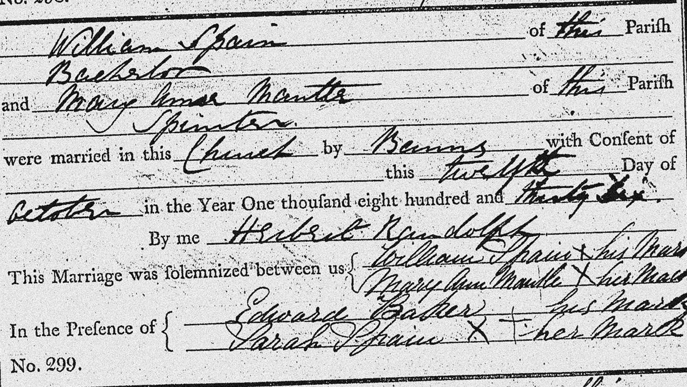
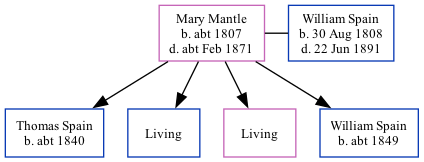

Mary Ann Spain (née Mantle) c1807 - c1871
[ Home ] | [ Calendar ] | [ Surnames Index ] | [ Family History ]Mary Mantle, the wife of William Spain (the three times great-uncle of Nigel Horne), was born in Eastry, Kent, England <i>c.</i> 1807<span class="citation">1,2</span> and married William (an agricultural laborer with whom she had 4 children: <a href="I1686.html">Thomas</a>, <a href="I1687.html">Charles</a>, <a href="I1689.html">Mary Ann</a> and <a href="I1688.html">William</a>, along with 2 surviving children) at St Nicholas, Ash, Kent, England on Oct 12, 1836<span class="citation">5</span>.</p><p>Mary spent all of her life in Kent, England. Throughout her life, she lived in several places around the county: on Knell Lane in Ash on Jun 6, 1841<span class="citation">6</span>; at New Street in Ash in 1851<span class="citation">1</span> and on Mar 30, 1851<span class="citation">7</span>; and in Ash in 1861<span class="citation">2</span>. <p>She died <i>c.</i> Feb 1871 in Eastry<span class="citation">3,4</span> and was buried in Ash on Mar 19, 1871.
Children
- Thomas was born c. 1840
- William was born c. 1849
Citations
- 1851 England Census Online publication - Provo, UT, USA: The Generations Network, Inc., 2005.Original data - Census Returns of England and Wales, 1851. Kew, Surrey, England: The National Archives of the UK (TNA): Public Record Office (PRO), 1851. Data imaged from the National
- 1861 England Census Online publication - Provo, UT, USA: The Generations Network, Inc., 2005.Original data - Census Returns of England and Wales, 1861. Kew, Surrey, England: The National Archives of the UK (TNA): Public Record Office (PRO), 1861. Data imaged from the National
- England & Wales deaths 1837-2007 - Findmypast
- England & Wales deaths 1837-2007 - Findmypast
- Kent, Canterbury Archdeaconry Marriages - Findmypast
- 1841 England, Wales & Scotland Census - Findmypast (was age 30)
- 1851 England, Wales & Scotland Census - Findmypast (was age 44 and the wife of the head of the household)
Media
William Spain - Mary Mantle - marriage

Canterbury Marriage Banns Transcription - GBPRS-CANT-M-94093137-1
1851 England, Wales & Scotland Census Transcription - GBC-1851-0005905339
1841 England, Wales & Scotland Census Transcription - GBC-1841-0013912216
Canterbury Marriages Transcription - GBPRS-CANT-M-97181232-1
England Marriages 1538-1973 - R_848137766
1841 England, Wales & Scotland Census - GBC/1841/0013912217
England & Wales deaths 1837-2007 - BMD/D/1865/4/HS/001312/036
England & Wales deaths 1837-2007 - BMD/D/1871/1/AZ/000345/126
Kent marriages and banns - GBPRS/CANT/M/97181232/2
England Marriages 1538-1973 - R_848137766/2
Family Tree
Generated by Ged2Site. Last updated on Jul 20, 2025